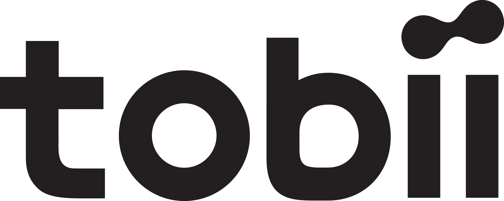

Rankings Tech hardware & optics Tobii

Tobii
The model found several serious problems. That does not mean the stock will fall.
Biggest deductions
- Finansiering og gæld (going concern)−17
- Margin−8
- Quality of growth−7
Strengths
- Cost discipline+2
- Future segment+1
Speculative profile
A penny stock under DKK 3. The asymmetry rating is separate from the Vanta score and is not a recommendation.
- Asymmetry (1–10)
- 3
- Price
- 0.73 DKK
- Market value
- DKK 166m
- Cash runway
- 11 months
- Cash / debt
- 37.0 / 547.0m SEK
- Dilution, 12 months
- +0%
Bull case
Autosense sælges eller får en stærk partner til en pris, der dækker en stor del af nettogælden på ca. 510 mio. SEK, og kerneforretningen (82 % bruttomargin, ca. 500–550 mio. SEK omsætning) bliver cash-positiv efter besparelserne. Med EV/salg på 1–1,5 og lav gæld kunne egenkapitalen være 0,6–0,9 mia. SEK, dvs. 2–3x i dag; 5x+ kræver et salg til en klar overpris.
Bear case
Ingen køber til en god pris, kassen løber tør, og en redningsemission eller gældskonvertering sker langt under 1 SEK (fx en fortegningsemission på 300–500 mio. SEK ved 0,3–0,5 SEK). Ved brud med långiverne kan aktionærerne miste næsten alt.
Catalysts
- 22 Oct 2026Q3 2026-rapport: likviditet, status på strategisk gennemgang og eventuel finansieringbinary stockanalysis.com
- Q4 2026Udfald af strategisk gennemgang: frasalg/partnerskab i Autosense eller kapitalrejsningbinary quartr.com
- 2027Mål om vedvarende positivt driftscashflow fra 2027, båret af Autosensegradual quartr.com
How the score is built
From 100 to 43, step by step: points off for the business, the price and the cracks, back for documented strengths, then three data adjustments.
Hover or select a step to see what drove it. Steps with findings open them below.
Key numbers
As of 2 Oct 2026. Analyst targets tend to be optimistic; read upside as a hint, not a forecast.
- Price
- 1.13 SEK
- Median analyst target
- –
- Upside to median
- –
- Analysts
- none
- Target range
- –
- 52-week change
- −67%
- P/E (trailing)
- n/a
- Forward P/E
- n/a
- PEG
- n/a
Findings
Every deduction and every plus, with its source. Open a step to read them.
Business
Is the company getting stronger, not just bigger? · 4 findings−24 of −30
- −8MarginUnderliggende driftsunderskud: Q2 2026-EBIT på 15 mio. SEK indeholder ca. 51 mio. SEK ikke-kontant tilbageførsel af betinget købesum, så den reelle EBIT er ca. −36 mio. Nettoresultat −306 mio. SEK TTM efter nedskrivninger (Q4 2025: −201 mio.). Bruttomarginen er høj (82 %), men selskabet har kun haft positivt driftsresultat i ét af de seneste fem år.
- −7Quality of growthOmsætningen faldt 46 % i Q2 2026 til 154 mio. SEK og 31 % TTM til 670 mio. Integrations faldt fra 178 til 37 mio. SEK (engangslicens året før), Products & Solutions fra 93 til 76 mio. Kun Autosense vokser (40 mio. mod 12, drevet af en licensaftale). Justeret organisk vækst var 7 %.
- −6Capital allocationOpkøb i Autosense er finansieret med lån og betingede købesummer: total gæld steg fra 79 mio. SEK (2023) til 547 mio. (Q2 2026), mens kassen faldt fra 236 til 37 mio. Store nedskrivninger i Q4 2025 viser, at købene ikke har givet det forventede afkast.
- −3MoatTobii er førende i eye tracking, men i bil-kabinesensorer (DMS) konkurrerer selskabet med Seeing Machines og Smart Eye, og Integrations afhænger af få PC-/XR-producenter. Selskabet udvider nu til komponentlicenser i Autosense, hvilket presser prisen pr. bil.
Price
Today's multiples against the company's own history and its peers. · 1 finding−5 of −35
- −5Multiples vs own historyP/S 0,40 er lavt mod 0,55–2,9 i 2023–2025, men gælden giver EV/salg 1,16 og EV/EBITDA 20,4 på en EBITDA, der er næsten nul. Med negativt resultat og selskabets egen FCF på 35 mio. SEK TTM er aktien kun billig, hvis gælden kan refinansieres uden stor udvanding.
Cracks
Cash flow, customers, debt, insiders, guidance and what sits behind the headline numbers. · 3 findings−25 of −35
- −17Finansiering og gæld (going concern)Kassen var 37 mio. SEK pr. 30/6-2026 plus en kreditramme på 25 mio. (14 mio. trukket) mod nettogæld på 510 mio. Ledelsen skriver selv, at der er risiko for utilstrækkelig finansiering de næste 12 måneder, og bestyrelsen undersøger frasalg, partnerskaber og kapitalrejsning. En emission ved 1,1 SEK vil udvande kraftigt.
- −5Efterspørgsel og kunderSvag efterspørgsel i Kina og bortfald af engangslicenser i Integrations; ingen guidance for H2 2026. Ledelsen forventer kun en 'gradvis normalisering' i Kina.
- −3Autosense-eksekveringAutosense skal bære målet om positivt driftscashflow fra 2027, men forretningen kræver yderligere besparelser (ca. 50 mio. SEK årligt) og søger partnere; bilindustriens programmer har lange forsinkelser, og en tvunget salgsproces kan give en lav pris.
Plus
Only documented strengths. · 2 findings+3 of +15
- +2Cost disciplineBesparelsesprogrammet fra Q3 2025 har leveret 163 mio. SEK over fire kvartaler (43 mio. i Q2) mod et mål på 100 mio.
- +1Future segmentAutosense-omsætningen er mere end tredoblet (40 mio. SEK mod 12 i Q2) efter en ny licensaftale; EU's krav om førerovervågning i nye biler driver efterspørgslen.
Caveats
What the score does not capture, or where the data is weak.
Also in Tech hardware & optics
The highest scores in the same industry.